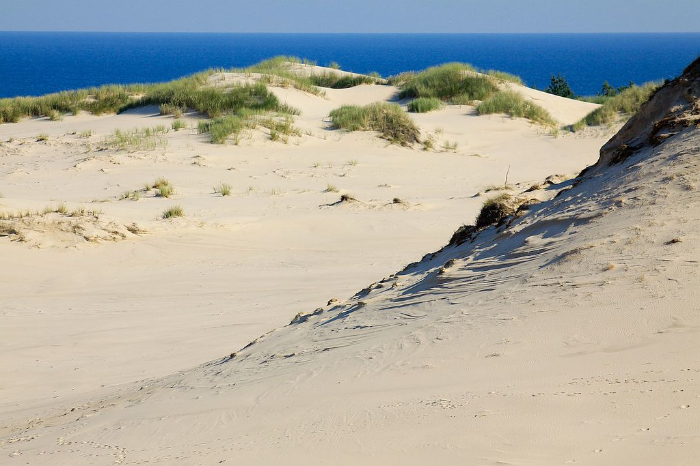
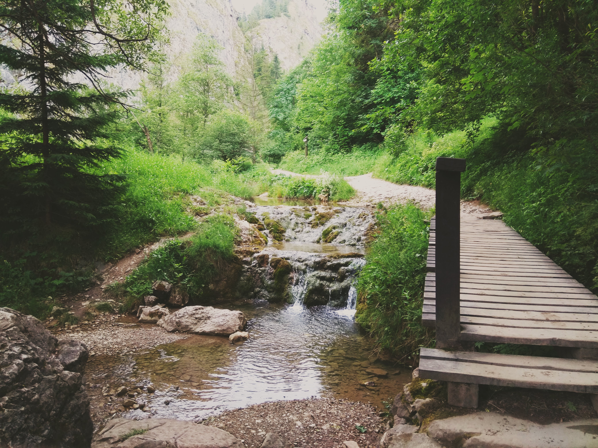

Slowinski National Park
Along the Baltic Coast is the Slowinski National Park.
It was founded to preserve beauty of the seaside coastline including lakes system, peat bogs, meadows and woods.
But the most important is to protect the most exceptional in Europe belt of moving dunes.
As they move along the Mierzeja Lebska (Lebska Spit), they uncover ancient tree stumps and the fossilized
remains of forest once growing there.

Hel Peninsula
The Hel Peninsula, located in the north of Poland is one of the most picturesque and unspoilt parts of the Baltic Coast. Lovely beaches, the water surrounding the peninsula on three sides,
a pretty resorts and charming Kashubian villages make the Hel Peninsula the perfect holiday setting. The Hel Peninsula begins in the vicinity of the village of Władysławowo, its width is approximately 300 meters, extending all the way to the town of Hel, which owes its name.
In Hel’s vicinity, the width of the penisula is about 3 kilometers, but in the narrowest point, the Hel Peninsula is only 150 m. You will find here
beautiful and charming holiday resorts, such as Wladyslawowo, Kuznica, Jastarnia, Jurata, and Hel.

The Crooked Forest
In a small corner of western Poland, near the town of Gryfino, a strange and eerie woodland exists. This bizarre collection of curved trees, named the “Crooked Forest,” is shrouded in mystery and despite the numerous different theories that have been proposed over the years, no one truly knows what caused the trees to adopt this conformation.
The Crooked Forest consists of around 400 pine trees that grow with a 90-degree bend at their base, the vast majority of which are bent northward. Curiously, the Crooked Forest is enveloped by a larger forest of straight growing pine trees. It is estimated that the trees were planted in the 1930s
and that they were around 7-10 years old when they experienced whatever force/damage that resulted in trunk curvature.
Kampinos National Park
Immediately North West of Warsaw (just 20km, heading in the direction of the towns Łomianki or Truskaw from the city centre), Kampinos National Park is the most accessible of Poland’s national parks. The entire area covers 385km2, which is interspersed with dense woodland, dunes and marshland, criss-crossed with biking, hiking and horse-riding trails, with the forest itself being home to 81 endangered species. The past decades have witnessed successful attempts to reintroduce beaver, elk and lynxes back to the wild.
Szczeliniec Wielki
Szczeliniec Wielki is the highest peak (919 m) at Table Mountains, in the Table Mountains National Park. It belongs to the Crown of Polish Mountains and is one of the biggest tourist attractions of the Sudetes,
the landscape reserve and viewing terraces with panoramic views of the Sudetes. The highest point is a rock called "Armchair of Great Grandfather".

The Wilczka Waterfall
The largest and highest waterfall in the Massif of Śnieżnik is at the same time the highest waterfall in the Sudetes. It formed on the tectonic fault line from which the Wilczka River falls into a hollow 22 meters below and rushes further along a narrow canyon known as an American canyon with vertical walls rising to the height of even 25 m.
The area surrounding the waterfall is covered with beautiful old mixed forest dotted with picturesque rocky outcrops. Since 1958 the waterfall and its immediate vicinity have been a protected area and form the Wilczka Waterfall Nature Reserve.

Bledow Desert
40 kilometres away, smack between Kraków and Katowice, lies Pustynia Błędowska (Błędów Desert) - a bonafide, genuine, centuries-old desert. Known as the 'Polish Sahara',
this is Central Europe's largest sand-pitch, and though it covers an area of only about 33 square kilometres between the small towns of Klucze, Chechło and Błędów today, it was once 5 times larger.
Poland's inexplicable desert is also an attractive, offbeat place for hiking and horseback riding.

Paradise Cave
Paradise Cave (Jaskinia Raj) is situated 11 km from Kielce. This cave is definitely one of the 2 most interesting ones in Poland as it has various geological cave formations. Do you remember your geography lessons about stalactites, stalagmites, pillars and cave pearls? You will find all of them here live. The cave is rather small as its length is only 240 m. Still, the amount of cave forms is so amazing that you won’t like to leave the cave too soon. In the cave there is a stable temperature of 9° C, the humidity is as high as 95%. The cave has also small lakes. The number of people entering the cave every day is limited to protect the cave natural environment.

Morskie Oko/The eye of the sea
Morskie Oko, or Eye of the Sea in English, is the largest and fourth-deepest lake in the Tatra Mountains, in southern Poland.
The peaks that surround the lake rise about 1,000 meters above its surface; one of them is Rysy (2,499 meters), the highest peak in the Polish Tatras.
Morskie Oko is one of the most popular destinations in the Tatras, often receiving over 50,000 visitors during the vacation season. It is reached by foot in about two hours from the nearest road that allows motorized access.
The name "Morskie Oko" ("Eye of the Sea") is derived from an old legend, according to which the lake was connected to the sea via an underground passage.

Homole Gorge
It is one of the most well known Pieniny trails and it is also believed to be one of the prettiest paths in Poland. The tourist green trail starts near Jaworki village which is situated close to Szczawnica. Homole Gorge is 800 m long, it has 40 hectares area and the stroll there takes about 45 minutes. The gorge has very diverse lie of the land and also interesting geological structure. At the bottom of the gorge we find Kamionka mountain stream with many staircase locks. The trail crosses the stream a few times with picturesque metal bridges. The walls of the gorge are up to 120 m high. The gorge path ends at Dubantowsa Valley where there are tables and benches ideal for a picnic.
